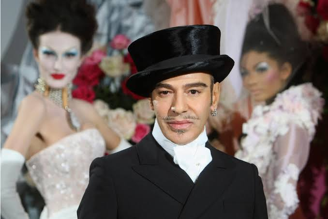
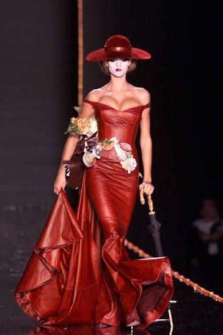
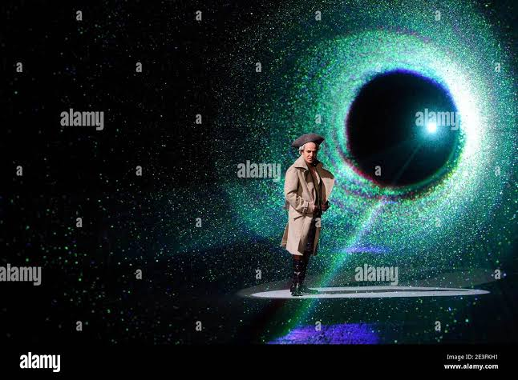
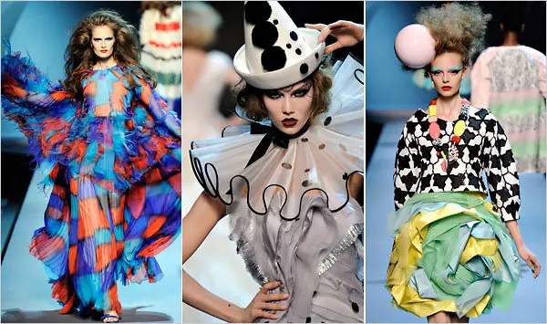

primeiro post
Por: juju
Para meu primeiro post, vamos começar falando sobre o próximo tema do Met Gala de 2027, o polêmico John Galliano.
Bem-vindos ao meu blog sobre moda,tendências e livros!!
Por: juju
Para meu primeiro post, vamos começar falando sobre o próximo tema do Met Gala de 2027, o polêmico John Galliano.
.jpg)
Por: juju
John Galliano é um estilista britânico genial e controverso, revolucionou a alta-costura com desfiles altamente teatrais, românticos e de forte apelo histórico. Ele atingiu o auge da moda global ao comandar a criação de grandes grifes como Givenchy e Christian Dior..
Fonte: Jornal Opção
0

Por: Juju
Porque o considera um dos criadores mais brilhantes, inventivos e influentes da história moderna da alta-costura Wintour defendeu publicamente a escolha afirmando que a trajetória de um grande artista "não se define por um único momento" se referindo as polêmicas que aconteceram.

Por: juju
Galliano buscou uma atmosfera de nostalgia infantil com sapatos propositalmente grandes(como galochas) roupas chamativas, colororidas e rostos pintados, fechando o desfile aparece Gisele Bündchen, usando um vestido vermelho, lembrando uma governanta inglesa,fazendo associação como o fim da brincadeira das crinças, pois a madrasta/baba má chegou.

Por: Juju
Para o outono, Jonh Galliano aventurou-se sozinho nor ermos congelados do folclore russo-balcânico. Uma tempestade de neve em microbolhasque caiam sobre a passarela, e um truque de iluminação a laser criava a ilusão mágica de que as modelos caminhavam por um túnel de conto de fadas, muito distante das brutais realidades das preocupações atuais da humanidade.
Por: juju
O último de Jonh Galliano para Dior, a coleção mostrou referências do anos 70 com elegância,romantismo e MUITO drama.Foramapresentado casacos,capas,botas,chapéus e vestidos de seda,
renda e tule. Cenário inspirado nos antigos salões da alta costura, com lustres,decoração elange e elementos sofisticados, nesse desfile ele não estava presente trazendo mais drama para a apresentação.
Depois desse desfile John Galliano ficou afastado da moda por um tempo devido as polêmicas que marcaram sua carreira. Anos depois ele voltou para moda no Maison Margiela Artissanal Spring/ Summer 2024, mostrando que sua tragetoria
ainda teria capítulos novos.
E vocêS,acham que, mesmo com todas essas polêmicas, John Galliano tem potencial para fazer do próximo Met Gala um evento realmente marcante?